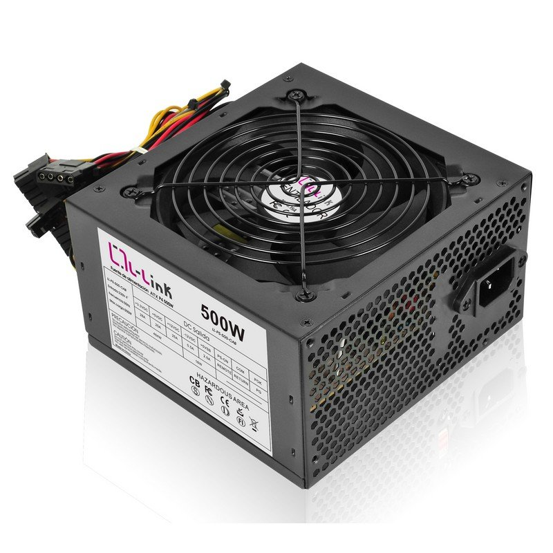
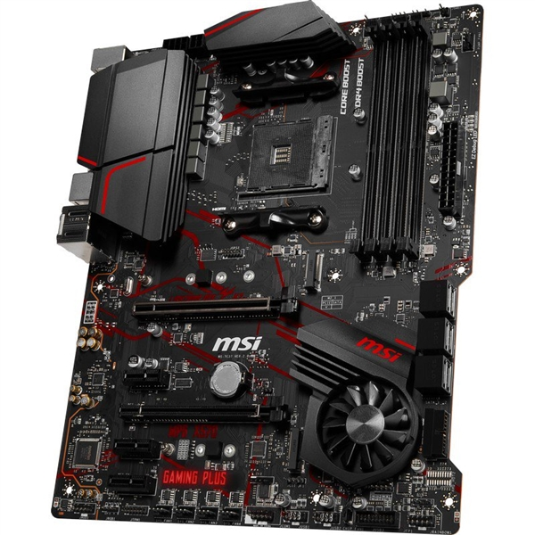
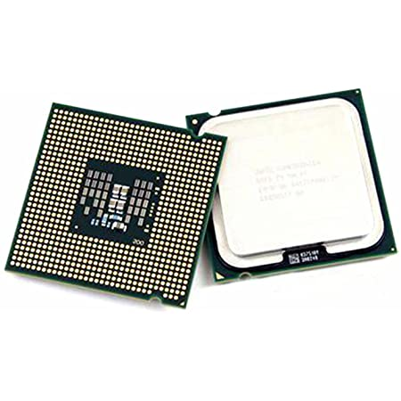
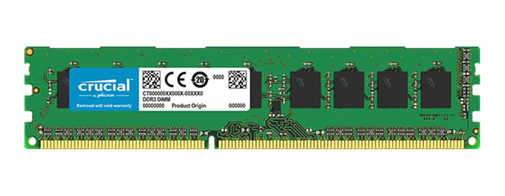
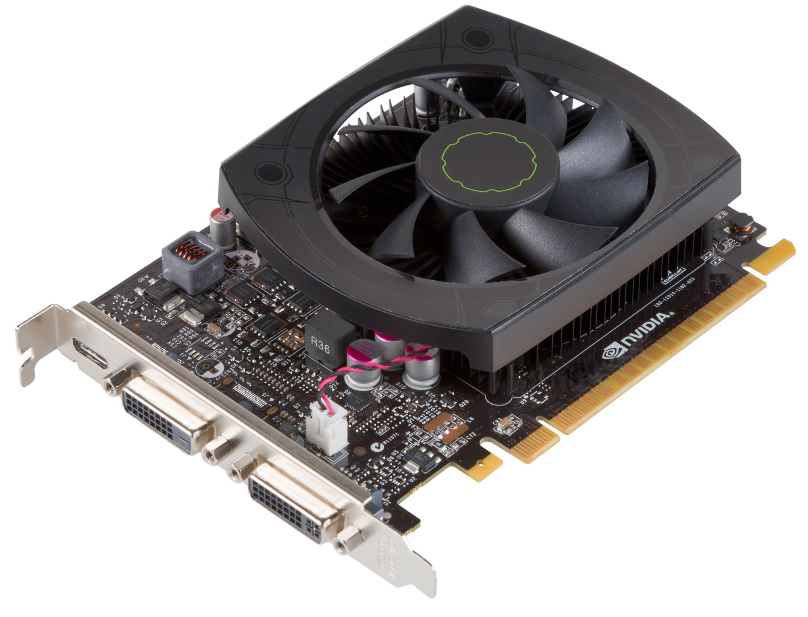
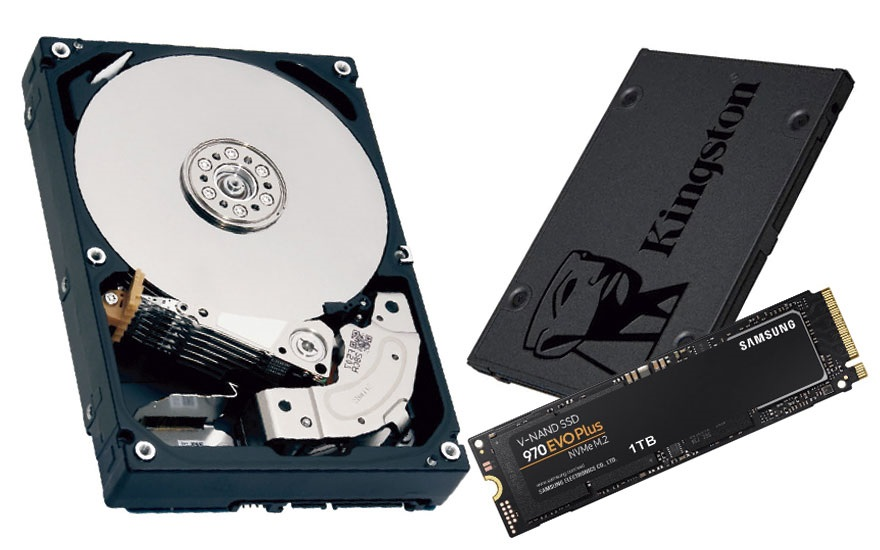

Lo primero que hay que tener en cuenta a la hora de planear la build (las
partes del PC en conjunto) del PC es el presupuesto que estamos dispuestos a
gastar y el uso que le vamos a dar al PC (multimedia, gaming, streaming, editar).
La salida mas fácil a la hora de empezar a informarse sobre todo esto es utilizar
builds construidas por otra gente que saben que funcionan y cuales son sus
capacidades, o utilizar webs en las que tu das tus expectativas del PC que quieres
y tu presupuesto y te ponen un ejemplo de lo que seria una buena compra.
Las webs Nate Gentile,
PC Builds o
PCPartPicker son buenos lugares para encontrar
builds, comparar piezas, ver que comenta la gente de ese producto y en general ver que puedes
hacer actualmente con tu presupuesto.
Las partes de mas importantes de un PC (en general todas son importantes) son:

Una fuente de alimentación convierte la corriente alterna (AC) en una forma
continua de energía que los componentes del ordenador necesitan para funcionar,
llamada corriente continua (DC). A diferencia de algunos componentes de Hardware
cuyo uso no es obligatorio, como podría ser un disco SSD, la fuente de alimentación es
una pieza crucial porque, sin ella, el resto del hardware interno no puede funcionar.
La fuente de alimentación es a menudo abreviada como PSU y también se conoce como fuente
de poder. Las placas base, cajas y fuentes de alimentación vienen en diferentes tamaños llamados
“factores de forma” y estos tres elementos deben ser compatibles para que funcionen correctamente juntos.
La fuente de alimentación está montada en la parte trasera de la caja

La placa base, también conocida como placa madre, placa principal,
motherboard o mainboard es un gran circuito impreso sobre el que se conectan
el resto de los componentes de un ordenador. En la placa base se coloca el
chipset, las ranuras de expansión, el zócalo del procesador, los conectores,
diversos circuitos integrados y muchos otros elementos. Se trata del soporte
fundamental que aloja y comunica a todos los demás componentes, para ello
posee una serie de buses mediante los cuales se transmiten los datos hacia
dentro y fuera del sistema.
La tendencia actual es integrar en la placa base el mayor número posible de
elementos encargados de las funciones básicas, como vídeo, audio, red y
puertos de varios tipos. Estas funciones antes se realizaban con tarjetas de
expansión, las cuales encarecían el precio final del ordenador.
La integración ha ido incluso más allá en los últimos años, moviendo muchos de
estos elementos dentro del procesador, algo que abarata aún más los costes de
fabricación. En ese sentido actualmente se encuentran los sistemas denominados
System on a Chip (SoC) que consiste en un único circuito integrado que consta de
varios módulos electrónicos en su interior, como un procesador, un controlador de
memoria, una GPU, tarjeta de sonido con resistencia a una alta impedancia o la
conectividad Wi-Fi y Bluetooth.
Hay que tener muy en cuenta varios factores a la hora de elegir una placa base:

El procesador, más conocido por sus siglas en
inglés CPU, es el componente fundamental de un ordenador, pues se
trata del encargado de interpretar y ejecutar instrucciones y procesar datos.
Los ordenadores más potentes, como los utilizados en la supercomputación, pueden tener multitud de microprocesadores
funcionando de forma conjunta, el conjunto de todos ellos conforma la unidad central
de procesamiento.
Las unidades centrales de procesamiento no sólo están presentes en los ordenadores,
sino que se incluyen en todo tipo de dispositivos que incorporan una cierta capacidad
de proceso, algunos ejemplos de ellos son los controladores de procesos industriales,
videoconsolas, televisores, automóviles, calculadoras, aviones, teléfonos móviles,
electrodomésticos, juguetes y muchos más. AMD e Intel son los diseñadores de las CPUs
para ordenadores, mientras que los modelos utilizados en dispositivos móviles y de bajo
consumo están diseñados por multitud de compañías como Samsung, Qualcomm,
Texas Instruments, MediaTek, Nvidia e Intel.
El microprocesador se monta en la placa base sobre el zócalo de la CPU, que permite
las conexiones eléctricas entre los circuitos de la placa y el procesador. Sobre el
procesador se fija un disipador térmico que es indispensable en los modelos que
consumen mucha energía, la cual, en gran parte, es emitida en forma de calor.
También podemos encontrarnos con procesador soldados en la propia placa base: Intel BGA.
Esto es bastante habitual en consolas, portátiles muy finos o en los mini PC de tamaño
super reducido.

La memoria RAM es la memoria principal con la que trabaja un sistema informático, se trata de un conjunto de chips que almacenan información,
a la cual es posible acceder de una forma muy rápida, algo importante para que el procesador no tenga que esperar a que le lleguen los datos que necesita para seguir trabajando.
RAM significa Random Access Memory, literalmente memoria de acceso aleatorio. Este término tiene relación con la característica de presentar
iguales tiempos de acceso a cualquiera de sus posiciones tanto para lectura como para escritura. Esta particularidad también se conoce como acceso directo,
en contraposición al acceso secuencial de otros tipos de memoria.
En la RAM se almacena temporalmente la información, datos y programas que la CPU lee, procesa y ejecuta. Este tipo de memoria es volátil, lo
que significa que los datos almacenados se pierden al interrumpir su alimentación eléctrica. Es decir, cuando apagamos o reiniciamos nuestro PC.
La memoria RAM de un ordenador se presenta en lo que se conoce como módulos, los cuales albergan varios circuitos integrados de memoria DRAM que,
conjuntamente, conforman toda la memoria principal.
La memoria RAM más usada en a actualidad es la DDR4 SDRAM. Los módulos tienen un total de 288 pines DIMM, cada uno de los cuales ofrece
una velocidad de datos que va de un mínimo de 1,6 GT/s hasta un objetivo máximo inicial de 3,2 GT/s. Las memorias DDR4 SDRAM tienen un mayor
rendimiento y menor consumo que las memorias DDR3 predecesoras.

Una tarjeta gráfica o tarjeta de vídeo es una tarjeta de expansión que se encarga de
procesar los datos provenientes de la CPU y transformarlos en información representable en el
dispositivo de salida, por ejemplo: monitor, televisor o proyector. Al igual que ocurre con la
tarjeta de sonido, la tarjeta gráfica también puede estar integrada en la placa base o incluso
en el procesador.
Una tarjeta gráfica está formada por varios elementos que trabajan de forma conjunta para hacer su
trabajo:
A su vez, la GPU está formada por varios elementos:
¿Puedo conectar dos tarjetas gráficas para ganar el doble de potencia? Sí, pero el escalado no es 100%. Dependiendo del juego podremos tener una mejora de un 20% más o un 50% gracias a las tecnología AMD Crossfire o AMD SLI. Hay que dejar claro que nunca podremos escalar al máximo, por lo que es mejor comprar la mejor tarjeta gráfica para gaming para ganar la máxima potencia. Si hablamos de minado o computación distribuida si podremos usarlo sin necesidad de ninguna tecnología.
Se usa la refrigeración en la computación para eliminar el calor residual
producido por los componentes del ordenador, para mantener los componentes dentro
de los límites de temperatura de funcionamiento permitidos. Los componentes que son
susceptibles al mal funcionamiento si se sobrecalientan incluyen circuitos integrados
como CPUs, chipset, tarjetas gráficas y unidades de
disco duro.
Los componentes a menudo se diseñan para generar la menor cantidad de calor posible,
y las computadoras y los sistemas operativos pueden diseñarse para reducir el consumo
de energía y el consiguiente calentamiento de acuerdo con la carga de trabajo, pero
aun así se puede produce más calor del que se puede eliminar, sin prestar atención a
la refrigeración. El uso de disipadores térmicos enfriados por el flujo de aire reduce
este aumento de temperatura.
Los ventiladores de la computadora se utilizan ampliamente junto con los disipadores de calor
para reducir la temperatura mediante la extracción del aire caliente.
La refrigeración líquida o watercooling es una técnica de enfriamiento que
utiliza líquido refrigerante como medio de refrigeración para el PC, logrando así excelentes
resultados en la disminución de temperaturas. Conlleva enormes posibilidades de
overclock. Se suele diseñar con circuitos de agua estancos.
El agua, y cualquier líquido refrigerante, tiene mayor capacidad térmica que el aire.
Aprovechando este principio, un circuito de refrigeración líquida disipa el calor
generado en los componentes del PC usando el agua como fluido refrigerante, enfriándola
en un radiador con ventiladores que está en contacto con el exterior de la caja,
expulsando el calor fuera de esta. El precio de la refrigeración liquida empieza mucho mas caro
que la refrigeración normal de aire.

Mientras la memoria se refiere a la ubicación de los datos a corto plazo,
el almacenamiento es el componente de la computadora que permite almacenar
y acceder a datos a largo plazo. Usualmente, el almacenamiento se da en forma
de una unidad de estado sólido o un disco duro. El almacenamiento le permite
acceder y almacenar sus aplicaciones, sistema operativo y archivos por un
tiempo indefinido.
Las unidades de estado sólido o SSD (solid-state drives), y las unidades de disco duro o
HDD (hard-disk drives), son las dos principales soluciones de almacenamiento disponibles
para los consumidores, y ambas tienen sus beneficios.
Cada una de ellas está especializada para realizar mejor diferentes tareas,
pero los SSD son la mejor elección y la mas cara.